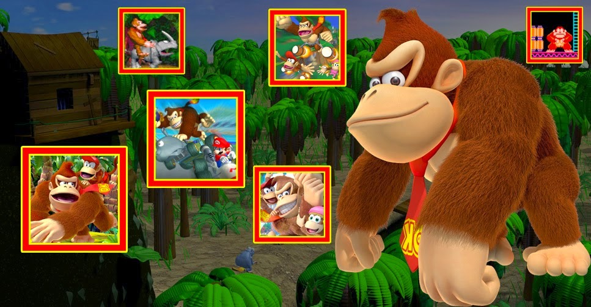

Donkey Kong: Uma jornada de sucesso e muitas bananas pelos videogames
Desde o surgimento dos primeiros jogos eletrônicos até hoje, os videogames já viram seres e criaturas de todos os tipos, e nesse mundo de incríveis criaturas, o reino animal é muito bem representado. Temos leões, ratos, pandas, ouriços, cavalos, guaxinins e todo o tipo de bicho. No meio dessa bicharada toda, claro que não podiam faltar nossos primos primatas. Quando o assunto é macaco nos videogames, estamos bem servidos. De uma família só temos uma enormidade de famosos símios, quase todos atendendo pelo sobrenome Kong. Contudo, é do mais famoso e importante gorila dessa família que iremos tratar aqui. Um dos mais importantes personagens da indústria de jogos eletrônicos, um dos principais mascotes da Nintendo, protagonista de uma das melhores séries de plataforma de todos os tempos, Donkey Kong.
Planeta dos macacos: A Origem
DK, para os mais íntimos, é o protagonista da clássica franquia homônima, tradicional pelo alto nível de qualidade dos seus jogos. Contudo, sua história nas selvas de pixels começa bem antes da famosa série Country estrear no Super Nintendo.
Donkey Kong é o famoso gorila mascote da Nintendo, criado pelo gênio do game designer, Shigeru Miyamoto. O personagem estreou em 1981 nos arcades, tornando-se sucesso de vendas, sendo a porta de entrada da gigante japonesa no mercado americano. Além das máquinas de arcade, Donkey Kong também estrelou diversos títulos em consoles de mesa e portáteis, sendo, sem dúvidas, um dos maiores bestsellers da história dos videogames, contabilizando mais de 48 milhões de jogos vendidos pelo mundo.
A maioria das suas aventuras é no estilo plataforma, embora tenha feito pontas em diversos gêneros, como corrida, luta e ritmo. Sempre em companhia da sua enorme e confusa família, seus títulos são conhecidos pela inovação técnica e designer de fases aprimorados.
Nas suas primeiras aparições no mundo dos videogames, Donkey Kong era o vilão da série, enfrentando o carpinteiro, Jumpman, em cenários de tela única que lembram construções industriais, ao estilo plataforma/puzzle/ação. Nesses primeiros anos de vida, nosso gorilão teve uma vida difícil, sequestrando donzelas e enfrentando bigodudos baixinhos com pose de herói.
O mistério da sua origem e uma nova identidade
E não foi apenas na aparência que tivemos mudanças radicais para Donkey Kong, alguns fatos mudariam para sempre sua história, criando polêmica e teorias mirabolantes sobre quem ele realmente é.
Na verdade, Donkey Kong não é Donkey Kong. Mas como assim, louco redator? Pois é, caro leitor, O gorila dos primeiros jogos que enfrentou Mario, quer dizer, Jumpman, é, na verdade, Cranky Kong, ou melhor, Donkey Cranky Kong. Ou pelo menos é isso que a Nintendo conta em alguns dos títulos da série principal pós-arcades. Aquele "malvadão" que sequestrava donzelas e atirava barris seria o pai do nosso querido Donkey Kong. Mas isso não significa que o passado do protagonista da série Country seja só de flores e glórias. Nada disso. Embora o responsável por todo o mal à Pauline e Jumpman seja o velho Cranky, Donkey Kong seguia fielmente os passos do seu pai (que em alguns games é dito até como avô). Aquele gorilinha que colocou terror em “Donkey Kong Jr.” e ainda correu nas pistas de Super Mario Kart seria o Donkey Kong que conhecemos hoje, só que mais novo e ainda levando o Jr. do pai no sobrenome. Só mais tarde, em 1994, que Donkey Kong ganharia notoriedade e atingiria a maturidade para seguir com o nome com o qual o conhecemos hoje.
Outras explicações dão conta de que o Donkey Kong Jr. é filho do Cranky e pai do Donkey Kong, sendo assim, o DK que conhecemos hoje seria neto de Cranky. Mas até a Nintendo se complica com essa genealogia, pois em alguns títulos ela o trata como filho e outros como neto do velhote Cranky.
Família Kong
E por falar em família, a lista de símios dessa é bem extensa e confusa. Embora o sobrenome Kong esteja presente em quase todos os macacos do jogo, é quase impossível saber quem é o que de quem. Temos no meio dessa confusão Diddy, sobrinho de DK, Dixie, namorada de Diddy, Kiddy, irmão de Chunky e por aí vai. Além desses, ainda tem Cranky Kong, avó/pai do DK, Funky, o ajudante, Lanky, o misterioso, Swanky, suposto irmão de DK, Tiny, a irmã mais nova de Dixie Kong e prima de Chunky e Kiddy, e Wrinkly Kong, senhora ex-dona da mansão Kong, falecida avó de Donkey e Swanky e mulher de Cranky. É uma família bastante confusa, mas feliz.
O legado
Descrito na Nintendo Power em sua edição 250 em janeiro de 2010 como seu oitavo herói favorito, como que mesmo sendo um pouco babaca, é incrivelmente bom no geral, além de divertido. Ironicamente, DK também transitou na lista dos vilões, sendo escolhido como o oitavo melhor vilão da Nintendo. Nesta edição há recomendações de que é melhor evitá-lo quando estiver sem gravata (alusão aos seus primeiros títulos no arcade). Um pouco de vilão, muito de herói, com um ar meio desajeitado, mas forte e destemido. O mais famoso e amado gorila da história dos videogames tem seu lugar de honra entre os principais personagens dessa indústria, protagonizando títulos de qualidade e divertindo várias gerações de jogadores, seja nos antigos arcades e consoles de mesa, até os portáteis.
Por fim, é notória a relevância de Donkey Kong para a indústria do entretenimento digital, sendo responsável direto por várias reviravoltas no mercado de games, criando e recriando modelos e sendo, quase sempre, sinônimo de qualidade e diversão. Com certeza ainda veremos o rei do swing balançando nos galhos da Donkey Kong Island por muito tempo, trazendo para os amantes de um bom game, muitas horas de diversão e exploração, além de muita música, claro.Que o dono da gravata vermelha continue fazendo a alegria dos jogadores ao redor do mundo. Vamos aguardar ansiosos até a próxima vez que visitarmos a exuberante ilha dos macacos na companhia do rei do swing.